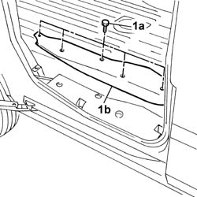
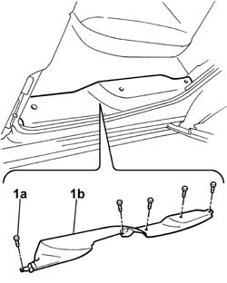

7040L44 rear compartment scuff strip - r r
- Path
- Procedures > 70 FITTINGS > 7040 BODYSHELL INTERIOR TRIMS AND FITTINGS > 7040L cabin floor covering > 7040L44 rear compartment scuff strip - r r
- Kind
- repair procedure (removal / refitting; the operation number is the code)
- Applies to
- all engines; all production periods
- Interactive page
- https://sloeber94.github.io/elrnDB-fDbl/en/#/2585158
Applies to: engines: 1.2 8v, 1.6 16v, 1.3 JTD 16V, 1.9 JTD 8V, 1.9 DIESEL; all production periods; only with equipment: Cargo trim level
 Removing
Removing
 Refitting
Refitting1. Undo the bolts (1a) and remove the running board (1b).

Applies to: engines: 1.2 8v, 1.6 16v, 1.3 JTD 16V, 1.9 JTD 8V, 1.9 DIESEL; all production periods; only with equipment: Cargo trim level
Refitting
RemovingPosition the running board and secure it using the bolts.
Applies to: all engines; all production periods; only with equipment: Doblò trim level
Removing
Refitting1. Undo the bolts (1a) and remove the running board (1b).

Applies to: all engines; all production periods; only with equipment: Doblò trim level
Refitting
RemovingPosition the running board and secure it using the bolts.
Topics that link to this page (12)
- 3340A34 rpm sensor (one) of one l/h or r/h rear wheel - r+r
- 3340A48 wheel rpm sensors (four) - r r
- 5505C28 intergrated engine bay and abs system wiring - r r
- 5505C41 cabin wiring - r r
- 5580C40 SIDE BAG SENSOR (ONE), LH OR RH - R.R.
- 7005A34 front side door compartment seal r r
- 7020C16 SLIDING AND SUPPORTING ELEMENTS for one sliding side door, left or right - R.R.
- 7020C20 sliding side door compartment seal, l.h. or r.h. - r r
- 7020C25 Sliding side door lower sliding GUIDE, left or right - R.R.
- 7040L18 passenger compartment floor rear carpet - r r
- 7040L62 sill plate support for one rear door compartment one lh or rh r r
- 7065A04 PRETENSIONER CONTROL UNIT - R.R.